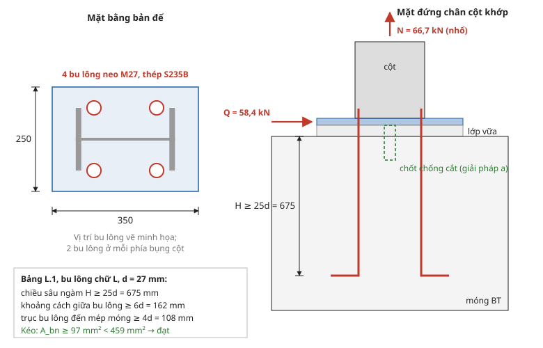

Bài 7.5. Bu lông neo, bản đế Anchor bolts and base plates (Annex L)
Bu lông neo chân cột khớp chịu lực nhổ do gió hút. Lực trượt ở chân cột chỉ được giao cho ma sát khi thỏa (L.9); nếu không, phải dùng chốt chống cắt.
- Tính diện tích bu lông neo theo (L.1) và kiểm tra lực trượt theo (L.9).
- Nắm trình tự tính bản đế: ép mặt bê tông, chiều dày bản đế, đường hàn chân cột.
1. Tình huống
Chân cột khớp nhà xưởng Hòa Bình có 4 bu lông neo M27, chịu lực nhổ 66,7 kN và lực ngang 58,4 kN (Ví dụ 7.3). Bảng tính cũ kết luận "đạt" vì cho bu lông neo chịu cắt như bu lông thường. Phụ lục L không có cách tính này, và khi chân cột bị nhổ thì ma sát không còn.

2. Quy định tiêu chuẩn
Bu lông neo chân cột (Phụ lục L)
Các quy định chính
- L.2.3: phân biệt bu lông tính toán và bu lông cấu tạo. Chân cột khớp nhà xưởng chịu gió nhổ thì bu lông neo là bu lông tính toán.
- L.2.3 (tiếp): với cột nhà có cầu trục, không được dùng bu lông lắp sau vào lỗ khoan, trừ bu lông đầu côn lắp bằng rung với chiều sâu ngàm $\ge 20d$.
- L.4.1: bu lông phải được siết trước với lực $F = 0{,}75P$ (tải tĩnh) hoặc $1{,}1P$ (tải động).
- L.4.2: diện tích theo ren
- L.4.5: khi có mô men, lực trong bu lông xa nhất là $P = -N/n + M y_1/\sum y_i^2$ (L.3).
- L.4.7: chân cột tiết diện đặc: $P = (R_b b_s x - N)/n$ (L.5), với $x$ là chiều cao vùng nén của bê tông theo TCVN 5574:2018.
- L.4.10: lực trượt vuông góc mặt phẳng mô men, hoặc lực trượt ở chân cột đặc, được phép do ma sát chịu khi
với $N$ là lực dọc nhỏ nhất đi kèm $V$, và $n$ là số bu lông ở phía chịu nén.
| Loại bu lông | Chữ L | Có bản neo (không tháo) | Thẳng (lỗ khoan) | Đầu côn |
|---|---|---|---|---|
| Chiều sâu ngàm tối thiểu $H$ | $25d_b$ | $15d_b$ | $10d_b$ | $10d_b$ |
| Khoảng cách giữa các bu lông | $6d_b$ | $8d_b$ | $5d_b$ | $8d_b$ |
| Trục bu lông đến mép móng | $4d_b$ | $6d_b$ | $5d_b$ | $8d_b$ |
| Hệ số ổn định lực siết $k$ (tĩnh) | 1,3 | 1,3 | 2,0 | 1,8 |
Bảng 7.9. Thông số cấu tạo bu lông neo (trích Bảng L.1; bê tông B12,5, thép S235C)
Bản đế chân cột – tóm tắt
TCVN 5575:2024 không trình bày chi tiết tính bản đế. Thực hành:
- Ép mặt bê tông: $\sigma = N/(B L) \le \psi R_{b,loc}$. $R_{b,loc}$ là cường độ chịu nén cục bộ theo TCVN 5574:2018 (8.1.5), có kể đến diện tích phân bố $A_{b,\max}$.
- Chiều dày bản đế: chia bản đế thành các ô bản (công-xôn, kê 3 cạnh, kê 4 cạnh), tính $M = \alpha\sigma d^2$, rồi $t_{bd} \ge \sqrt{6M/(f_{yd}\gamma_c)}$. $\gamma_c = 1{,}2$ theo Bảng 1 với bản đế thép $f_y \le 390$ MPa, chịu tải tĩnh, dày đến 40 mm.
- Đường hàn chân cột với bản đế: khi bản đế phay phẳng thì lực nén truyền qua tì đầu, đường hàn chỉ chịu lực nhổ và lực cắt.
Một quy trình tương đương, có công thức đầy đủ hơn, là AISC Design Guide 1 ở Chương 15.
3. Ví dụ tính toán
2.6.2 của khóa)Số liệu bảng tính: $N = 66{,}7$ kN (lực nhổ), $Q = 58{,}4$ kN, 4 bu lông M27, bản đế 350×250. Bảng tính tính theo TCXDVN 338 với cường độ bu lông 5.6: $[N]_{\min} = 96{,}4$ kN so với $N_{\max} = 17{,}0$ kN, kết luận "đạt", và kiểm tra cắt riêng rẽ.
Lời giải
Tính lại theo TCVN 5575:2024, Phụ lục L. Bu lông neo thép S235B: $f_{ba} = 180$ MPa.
- Kéo. $P = 66{,}7/4 = 16{,}7$ kN. Theo (L.1): $A_{bn} \ge 1{,}05 \times 16\,700/180 = 97$ mm². M27 có $A_{bn} = 459$ mm², tỷ số $0{,}21$, đạt. Chỉ cần M16 là đủ về kéo.
- Trượt. Theo (L.9), với 2 bu lông phía nén và $N = -66{,}7$ kN (nhổ):
$\mu(n A_{ba} f_{ba}/4 + N) = 0{,}25 \times (2 \times 459 \times 180/4/1000 - 66{,}7) = -6{,}3$ kN $< 58{,}4$ kN. Ma sát không chịu được lực trượt. Ngay cả khi $N = 0$, ma sát chỉ đạt 10,3 kN.
- Giải pháp. (a) Bố trí chốt chống cắt (shear key) hàn dưới bản đế, chôn vào lớp vữa hoặc hốc móng. Chốt tính chịu toàn bộ $V$ theo ép mặt bê tông và chịu uốn như công-xôn. (b) Hoặc chứng minh tổ hợp gây $V_{\max}$ đi kèm lực nén đủ lớn. Khi đó phải lấy đúng cặp $(V, N)$ đồng thời từ bảng Joint Reactions.
Cách để bu lông neo chịu cắt như bu lông thường (công thức 186) mà bảng tính của khóa đang dùng không có trong Phụ lục L của TCVN 5575:2024. Bản đế đặt trên lớp vữa và lỗ bản đế thường rộng hơn bu lông 5–10 mm, nên bu lông chỉ chịu cắt sau khi bản đế đã trượt và bị uốn qua lớp vữa. Nếu vẫn muốn cho bu lông neo chịu cắt, phải dùng long đen hàn vào bản đế sau khi lắp và kiểm tra bu lông chịu uốn, theo cách của AISC Design Guide 1 (Chương 15).
4. Lỗi thường gặp
- Kiểm tra trượt theo (L.9) với lực nén lớn nhất thay vì lực dọc nhỏ nhất đi kèm $V$.
- Cho bu lông neo chịu cắt như bu lông thường (186) trong khi lỗ bản đế rộng hơn bu lông 5–10 mm.
5. Luyện tập
Trong công thức (L.9), $N$ là lực nào và hệ số ma sát $\mu$ bằng bao nhiêu?
Gợi ý
Xem L.4.10.
Lời giải
$N$ là lực dọc nhỏ nhất xảy ra cùng $V$; $\mu = 0{,}25$.
Một bu lông neo S235B ($f_{ba} = 180$ MPa) chịu lực kéo $P = 30$ kN, tải trọng tĩnh. Tính diện tích tiết diện theo ren cần thiết.
Gợi ý
(L.1) với $k_d = 1{,}05$.
Lời giải
$A_{bn} \ge 1{,}05 \times 30\,000/180 = 175$ mm².
Chân cột có 4 bu lông neo M24 thép S235B, 2 bu lông ở phía chịu nén. Lực dọc nén nhỏ nhất đi kèm lực trượt là $N = 120$ kN. Tính giới hạn lực trượt do ma sát chịu theo (L.9).
Gợi ý
$f_{ba} = 180$ MPa, $A_{ba}$ lấy $A_{bn} = 353$ mm² như Ví dụ 7.3.
Lời giải
$0{,}25 \times (2 \times 353 \times 180/4/1000 + 120) = 0{,}25 \times (31{,}8 + 120) = 37{,}9$ kN.
- (L.1): $A_{bn} \ge k_dP/f_{ba}$, $k_d = 1{,}05$ (tĩnh), $f_{ba} = 180$ MPa với S235B.
- (L.9): $V \le \mu(nA_{ba}f_{ba}/4 + N)$, $\mu = 0{,}25$, $N$ nhỏ nhất đi kèm. Chân cột bị nhổ thì ma sát gần như bằng 0, cần chốt chống cắt.
- Bản đế: ép mặt bê tông theo TCVN 5574:2018, chiều dày từ mô men ô bản, $\gamma_c = 1{,}2$.